About Us: Experts in Global Trade of Food and Essential Goods
At CVenesca Group LLC, we specialize in connecting global markets. We are dedicated to international food trade, with a strong focus on ICUMSA sugar of various specifications (45, 150, 600-1200), as well as essential goods such as rice, corn, and vegetable oil. We offer comprehensive solutions ranging from direct-from-factory sugar trading, to DDP import in the USA and GACC certifications for China, ensuring safe, efficient, and profitable operations for our clients. Our expertise in strategic logistics and deep knowledge of global food markets allow us to guarantee success in every import and export process.
Mission, Vision & Values
Mission
To drive international trade with efficient, secure, and sustainable logistics solutions that connect markets and generate value for our clients.
Vision
To be a leading company in global trade, recognized for our commitment to excellence, innovation, and sustainable economic development.
Values
- Integrity
- Responsibility
- Transparency
- Commitment
- Innovation
Our Services: Connecting Global Markets with Logistics Solutions

Global ICUMSA Sugar Trading
Access the best prices and qualities of ICUMSA sugar (45, 150, 600–1200). We supply the food, pharmaceutical, and bioenergy industries worldwide, ensuring quality and efficiency in every transaction.

DDP Import Services in the USA
Simplify your imports to the USA with our Delivery Duty Paid (DDP) service. We handle everything, from logistics to customs compliance and final delivery, so you have nothing to worry about.

GACC Certification for Export to China
Facilitate your entry into the Chinese market. We offer GACC registration, Chinese labeling advice, CIQ inspection management, and local agent support for your food exports to China.

Strategic Consulting in International Trade
Boost your growth with our expert advice. We conduct detailed market studies, plan your global expansion, and provide support for compliance with international regulations to optimize your operations.
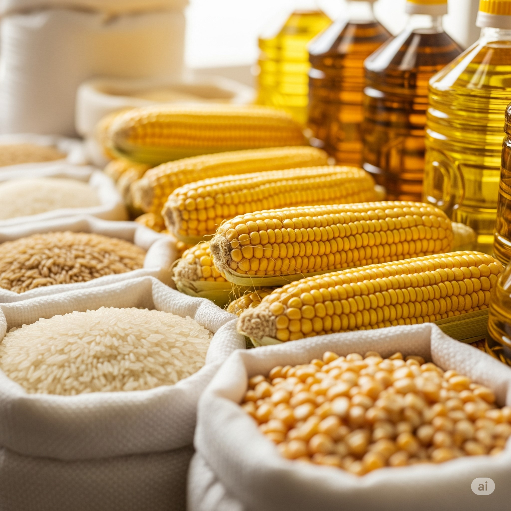
Trading Essential Goods and Raw Materials
Beyond sugar, we are your partner for trading essential goods such as rice, corn, vegetable oil, and other key raw materials. We connect global supply and demand for staple products.
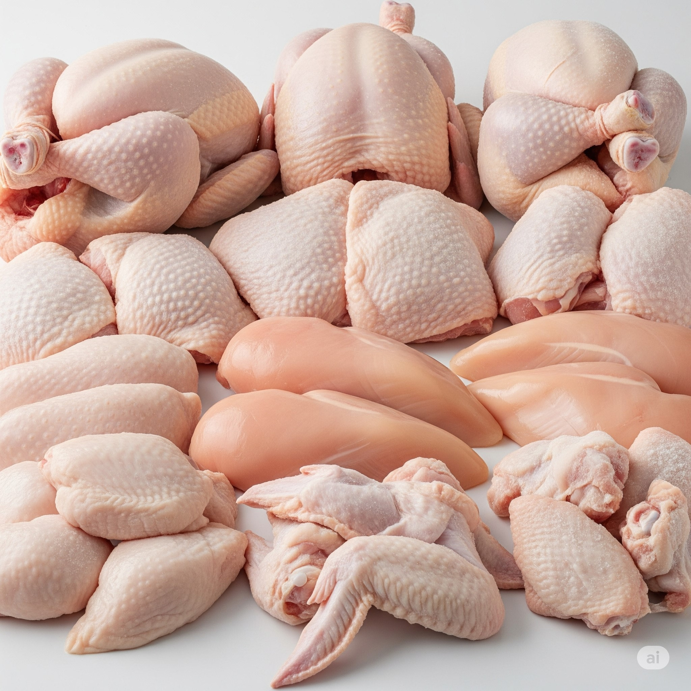
Poultry Trading (Frozen Chicken)
We supply high-quality frozen chicken and its parts (whole, thighs, breasts, wings) for the global market. We guarantee products that meet strict sanitary and export standards, ideal for distributors and wholesalers.
Types of ICUMSA Sugar
| Type | Color | Applications | Specifications |
|---|---|---|---|
| ICUMSA 45 | Bright white | Confectionery, beverages, pharmaceuticals | Polarization ≥ 99.8%, moisture ≤ 0.04% |
| ICUMSA 150 | Opaque white | Bakeries, local beverages | Polarization ≥ 99.5%, color ≤ 150 RBU |
| ICUMSA 600–1200 | Brown | Bioethanol, industrial fermentation | Raw sugar, high molasses content |
ICUMSA Sugar Gallery

ICUMSA 45
High-purity refined white sugar, ideal for direct human consumption and export.

ICUMSA 100
Standard white sugar for baking, beverages, and processed foods.

ICUMSA 150
Golden raw sugar for fermentation, distillation, and industrial processes.

ICUMSA 600–1200 VHP
High-polarization sugar for industrial refining and bulk export.
ICUMSA Sugar Technical Comparison
| Attribute | ICUMSA 45 | ICUMSA 100 | ICUMSA 150 | VHP |
|---|---|---|---|---|
| Color | ≤ 45 | ≤ 100 | ≤ 150 | 600–1200 |
| Polarization | ≥ 99.80% | ≥ 99.70% | ≥ 99.50% | ≥ 99.40% |
| Moisture | ≤ 0.04% | ≤ 0.06% | ≤ 0.08% | ≤ 0.10% |
| Ash | ≤ 0.04% | ≤ 0.07% | ≤ 0.10% | ≤ 0.15% |
Download Technical Datasheets
ICUMSA / SUGAR
Global Sugar Information & Projections
The global sugar market for 2025/2026 presents challenges and opportunities. Here we highlight the types of sugar, producing regions, and key factors affecting logistics and international trade.
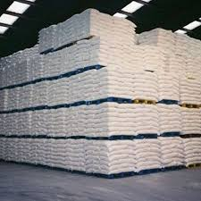
ICUMSA 45
Refined white sugar, high purity and global demand for food and beverages.
ICUMSA 100/150
Standard quality white sugar, ideal for baking and food industries.
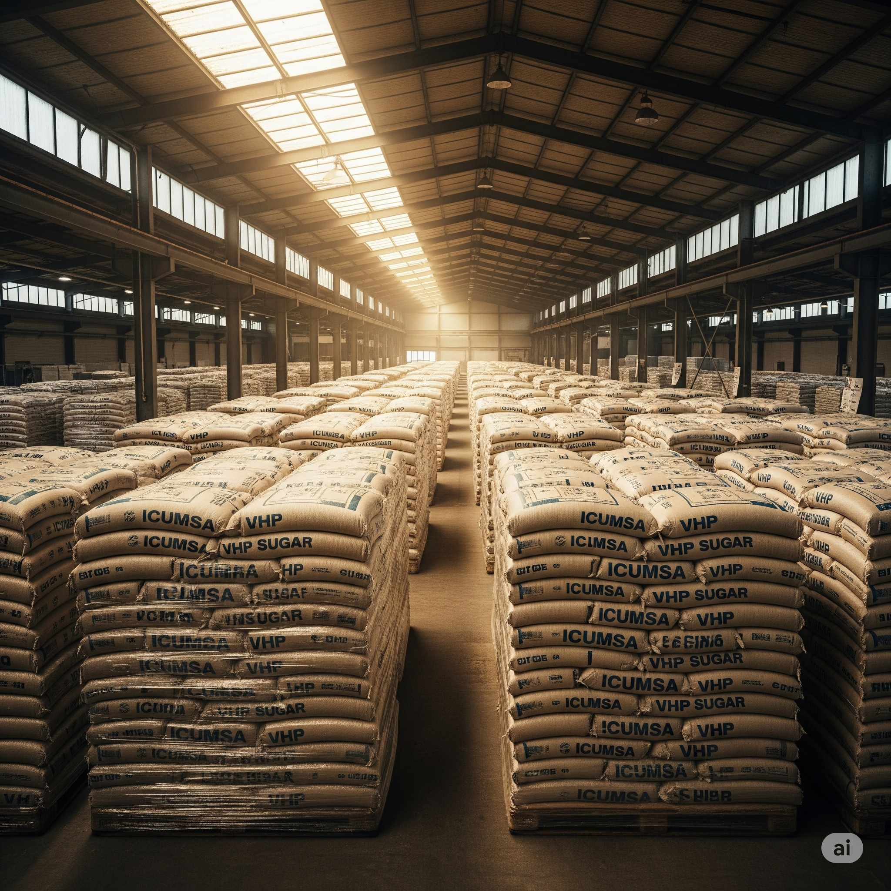
VHP 600-1200
High polarization raw sugar, raw material for international refineries.
Main Producing Regions
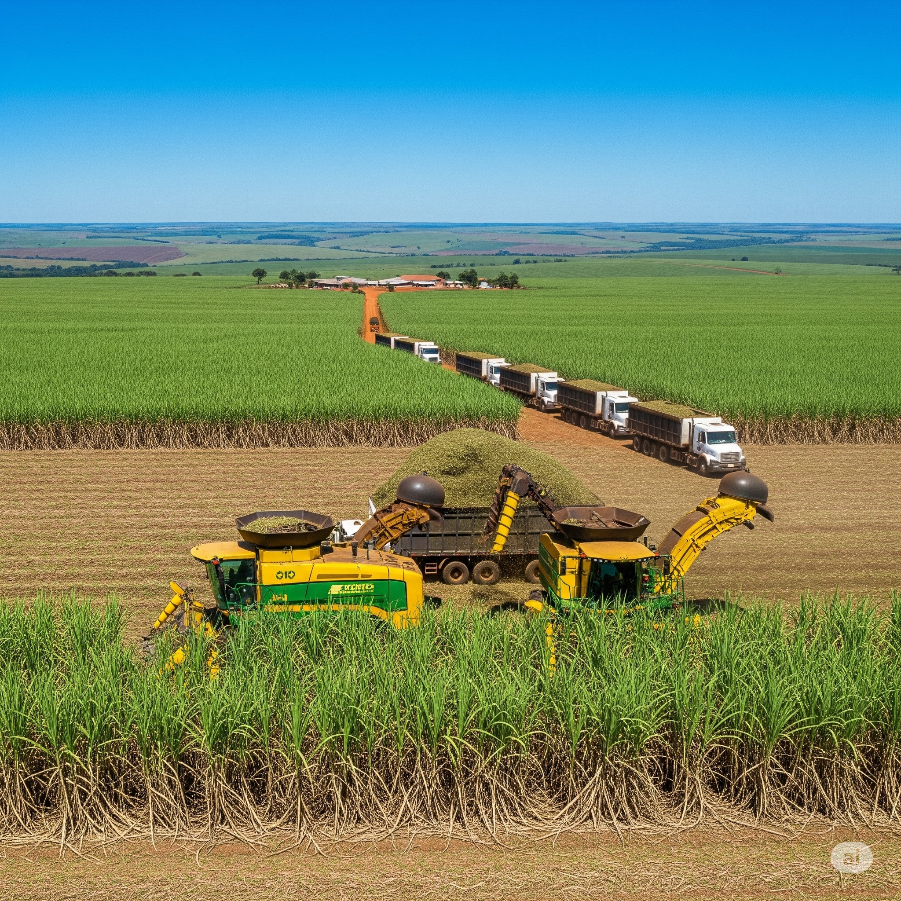
Brazil
World leader, with Santos and Paranaguá ports for massive exports. Stable harvest outlook and focus on refined sugar.
Projected Production
CONAB estimates a slight decrease in the 2025/2026 harvest, but with potential records in refined sugar production due to a shift in focus from ethanol.
Port Infrastructure
The Port of Santos leads with over 2,000 tons/hour export capacity. Paranaguá remains a key second node for mass exports.
Key Certifications
SGS, Bureau Veritas, and FIESP support the quality and legality of each exported batch. Includes certificates of origin, weight, health, and shipping.
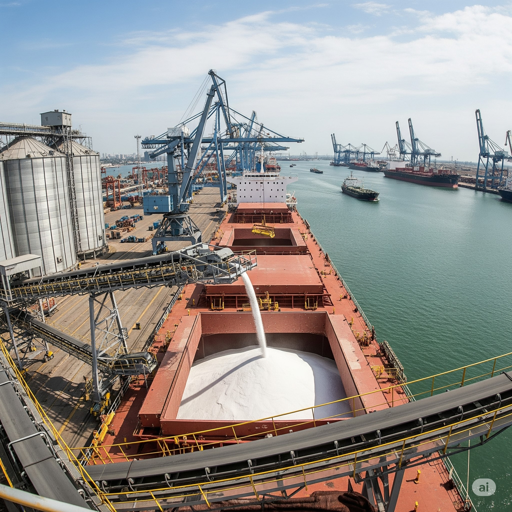
Thailand
Production recovery for 2025/2026. Efficient logistics from key ports such as Laem Chabang and Bangkok.
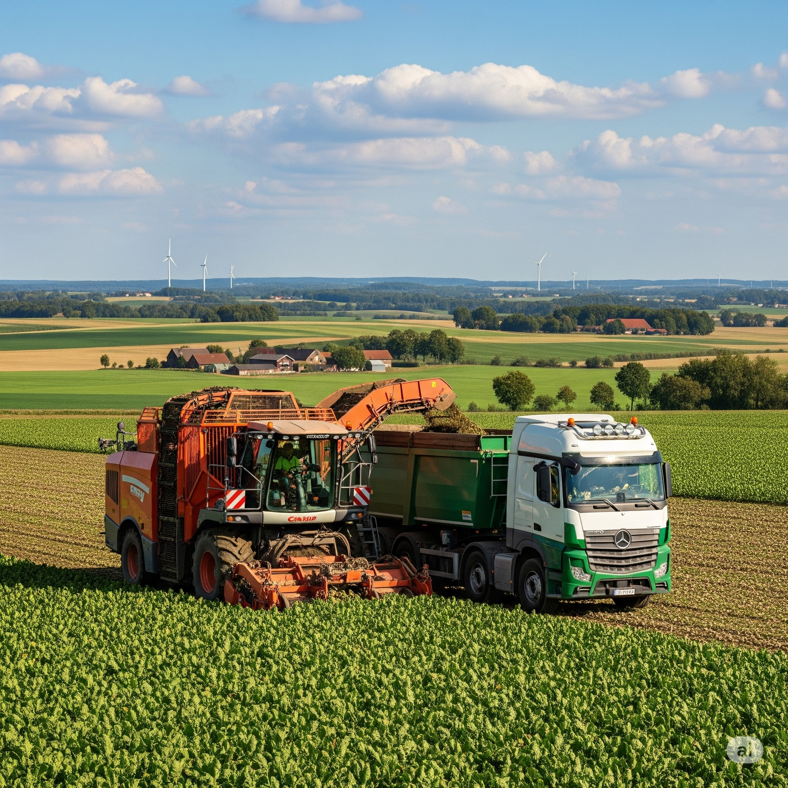
European Union
Production aimed at domestic consumption, with France and Germany leading in beet sugar.
Expected Production
DG AGRI projects an 8% decrease due to reduced acreage and pests. Beet sugar (ICUMSA 45–150) is mostly for internal consumption.
Main Ports
Antwerp, Hamburg, and Le Havre channel exports with multimodal logistics (trucks, trains, barges).
Key Certifications
Documentation supported by CEFS and the European Commission, includes EUR.1 Certificate of Origin and DUA Administrative Declaration.
Key Market Factors
Climate Volatility
Extreme weather events affect production, altering supply and prices.
Government Policies
Regulations on ethanol and subsidies modify export availability and market orientation.
Freight and Logistics Costs
Port congestion, container availability, and fuel prices impact the final cost.
Global Demand
Emerging markets such as Asia and Africa drive sustained growth of global sugar consumption.
P O U L T R Y
Our Premium Selection of Frozen Chicken
Our Frozen Chicken Cuts
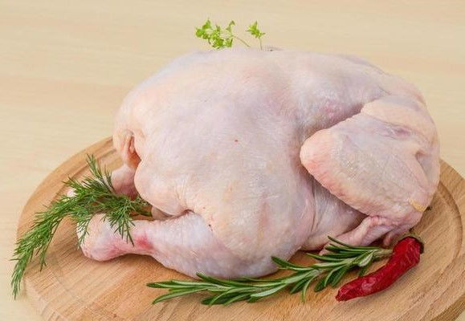
Whole Frozen Chicken
Whole chickens of different sizes, ideal for roasting or to be cut as per customer needs.
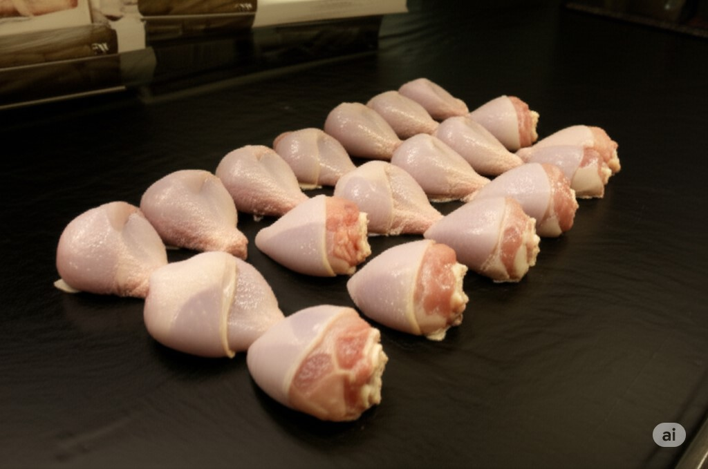
Frozen Chicken Thighs
Juicy and tasty thighs, with or without skin, perfect for a variety of preparations.
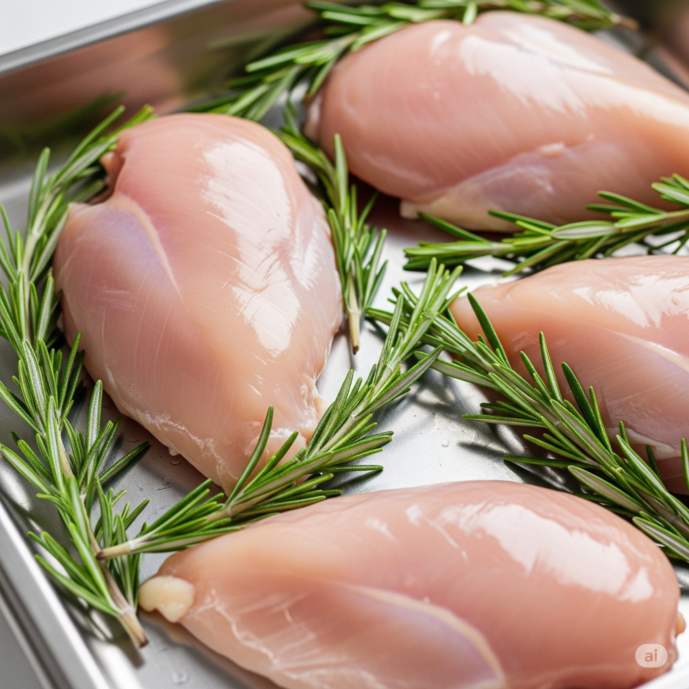
Frozen Chicken Breasts
Boneless and skinless breasts, a lean and versatile cut in high demand.
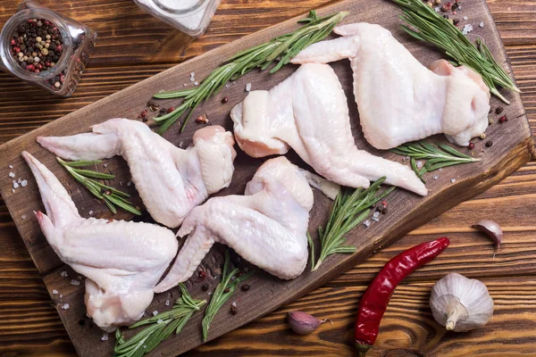
Frozen Chicken Wings
Whole wings or in sections (drumettes and flats), ideal for appetizers and main dishes.
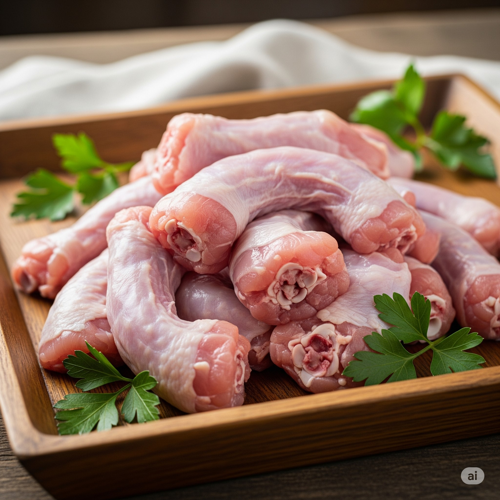
Frozen Chicken Necks
Chicken necks, used for broths, soups, and other culinary preparations.
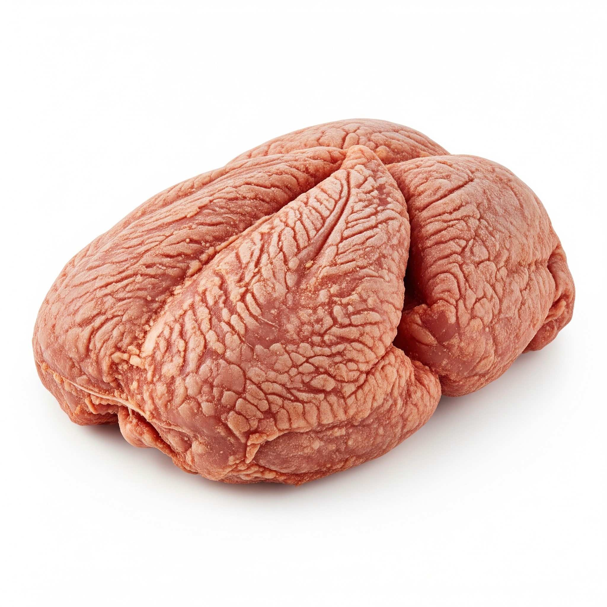
Frozen Chicken Livers
Fresh and frozen chicken livers, rich in nutrients.
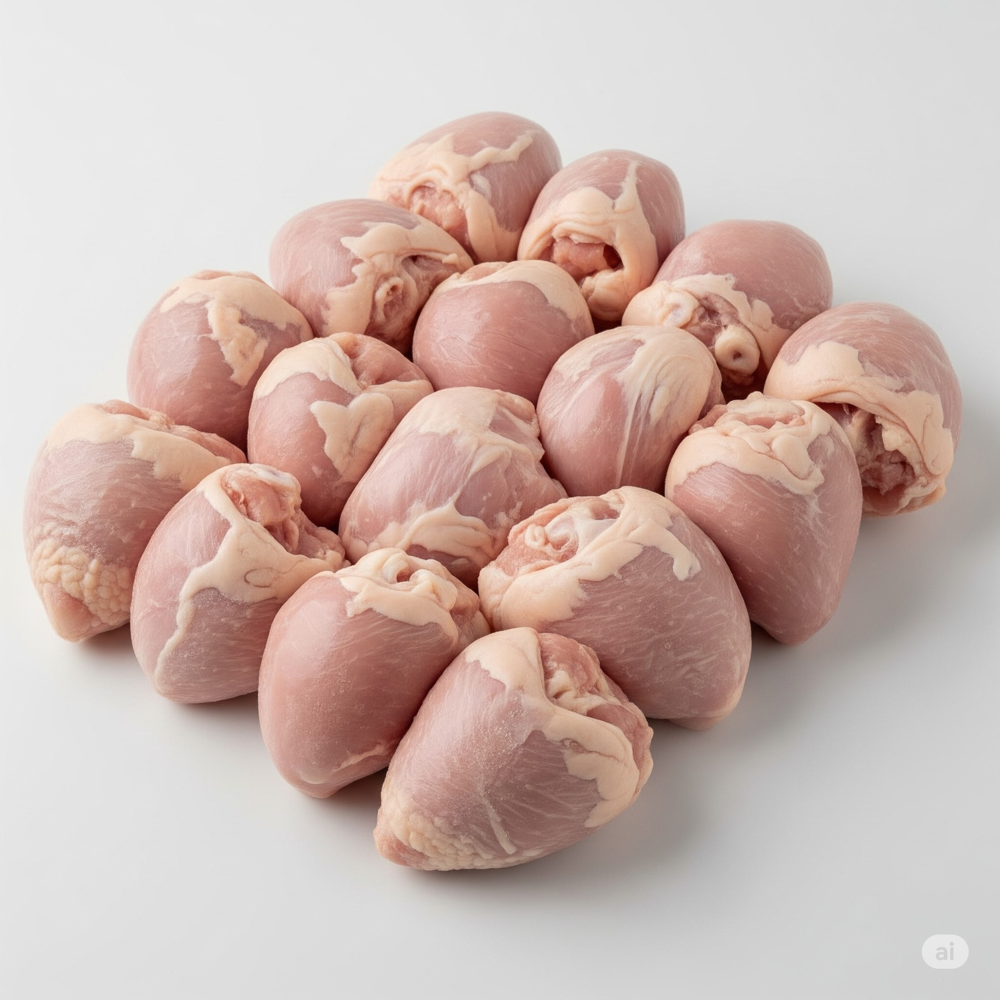
Frozen Chicken Hearts
Chicken hearts, a tasty and versatile ingredient for various recipes.
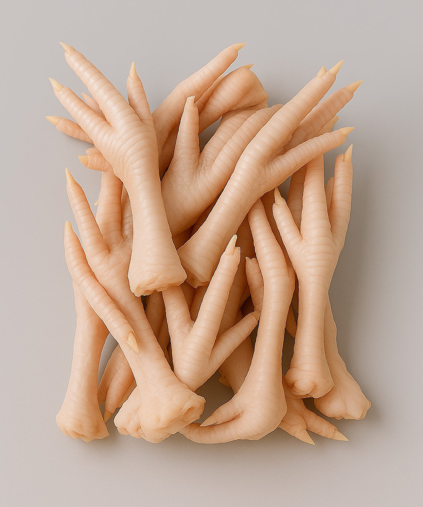
Frozen Chicken Feet
Selected and frozen chicken feet, ideal for traditional preparations, broths, and exotic dishes. Rich in collagen and highly valued in various cuisines.
Packing and Transport
Our frozen chicken is carefully packed in high-strength corrugated cartons, with polyethylene bags inside to protect quality during storage and transport. We offer customized packaging options according to customer needs. Transport is carried out in refrigerated containers, maintaining the proper temperature to preserve freshness and quality throughout the journey.
Countries of Origin
We work with reliable suppliers in Brazil, Russia, and Iran, countries recognized for their high standards in poultry production.
Sales Procedure and Incoterms
Our sales procedures are adapted to each client’s needs. We generally work with CIF (Cost, Insurance and Freight) and FOB (Free on Board) Incoterms. Contact us to discuss the specific terms of your order.
GACC Certifications
The poultry products we trade, especially those destined for the Chinese market, have the required GACC (General Administration of Customs of the People's Republic of China) certifications to ensure their entry and distribution in that country. We ensure compliance with all required sanitary and regulatory requirements.
Technical Datasheets
Detailed technical datasheets for each of our frozen chicken cuts, with specifications, certifications, and quality analysis, will be available for download soon.
Are You Interested?
If you are interested in learning more about our offer of frozen chicken and its parts, or want to request a quote, do not hesitate to contact us. Our team will be happy to assist you.